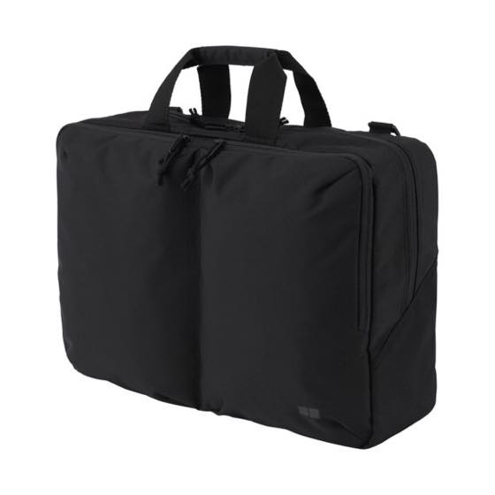

5월 도쿄갔을때 유니클로 매장서 2,990엔에 세일하고 있는걸
살까말까 고민하다가
아냐.....생긴게 넘 밋밋해 더 이쁜거 찾아봐야지 하고 한국와서 먼길 돌아돌아~
결국 제값 다 주고 산 멍청이가 여기있습니다 ㅋㅋㅋㅋㅋㅋㅋㅋㅋ
드디어 ALDO 백팩을 바이바이할 수 있게 되었군욤
랩탑 넣고댕길 가방을 찾고있었는데
가방 자체가 가벼워서 맘에듭니다
숄더 & 백팩 양쪽으로 사용가능하다는 것두요 ^^
전 백팩의 두꺼운 스트랩이 왤케 싫은걸까요 ^^;;;;;